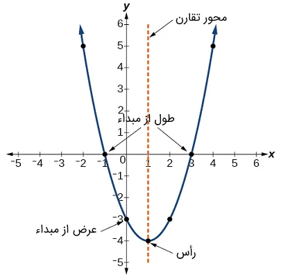

بخش اول
معادله درجه دوم به صورت کلی به شکل زیر نوشته میشود:
سلام \(ax^2 + bx + c = 0\) اگر
که در آن \( a \)، \( b \)، و \( c \) ضرایب معادله هستند و شرط \( a \neq 0 \) برقرار است. در غیر این صورت، معادله به درجه اول تبدیل میشود. متغیر \( x \) در این معادله نشاندهنده مقدار نامشخص است.
$$ 0 \leq j \leq n\, , \, o \leq i \leq n $$
$$
\begin{matrix}
1 & x & x^2 \\
1 & y & y^2 \\
1 & z & z^2 \\
\end{matrix}
$$
$$ \left[
\begin{array}{cc|c}
1&2&3\\
4&5&6
\end{array}
\right] $$
$$
\begin{pmatrix}
a & b\\
c & d\\
\hline
1 & 0\\
0 & 1
\end{pmatrix}
$$
$$\bigl( \begin{smallmatrix} a & b \\ c & d \end{smallmatrix} \bigr )$$
تابع \(f>0\) انتگرال پذیر ریمان روی \( [a, b] \) است
انتگرال \(\iff\) integral
انتگرال \(\iff\) integral
$$ f(n) =
\begin{cases}
n/2, & \text{if $n$ is even} \\
3n+1, & \text{if $n$ is odd}
\end{cases} $$
$$
\left.
\begin{array}{l}
\text{if $n$ is even:}&n/2\\
\text{if $n$ is odd:}&3n+1
\end{array}
\right\}
=f(n)
$$
\begin{CD}
A @>>> B @>{\text{very long label}}>> C \\
@. @AAA @| \\
D @= E @<<< F
\end{CD}
\[ انتگرال \iff integral \]
$$ انتگرال \iff integral $$
\[\lim_{ \lVert \mathbf{P} \rVert \to 0} R(f, P, T)\]
\begin{align}
\sqrt{37} & = \sqrt{\frac{73^2-1}{12^2}} \\
& = \sqrt{\frac{73^2}{12^2}\cdot\frac{73^2-1}{73^2}} \\
& = \sqrt{\frac{73^2}{12^2}}\sqrt{\frac{73^2-1}{73^2}} \\
& = \frac{73}{12}\sqrt{1 - \frac{1}{73^2}} \\
& \approx \frac{73}{12}\left(1 - \frac{1}{2\cdot73^2}\right)
\end{align}
\[
\forall \varepsilon > 0 , \exists \delta>0 \qquad \forall P(\lVert \mathbf{P} \rVert < \delta \rightarrow |R-l|< \varepsilon)
\]
تظریف:
فرض کنید \(P\) یک افراز از بازه دلخواه \([a, b]\) باشد آنگاه افراز \(P^*\) تظریف \(P\) میشود هرگاه \(P \subseteq P^* \)
انتگرال پذیری داربو
\[
U(f, P) = \sum_{i = 1}^n M_i \Delta x_i \qquad , M_i = sup\{f(t) ; t \in [x_{i - 1}, x_i]\}
\]
\[
L(f, p) = \sum_{i = 1}^n m_i \Delta x_i \qquad , m_i = inf\{f(t) ; t \in [x_{i - 1}, x_i]\}
\]
\[
U(f, P') \leq L(f, P) \qquad L(f, P) \leq L(f, P')
\]
\[P = \{a = x_0 < x_1 < x_2 <\dots < x_n = b \}
\]
\[
\exists i \, ; w\in [x_{i_0 - 1}, x_{i_0}] \quad ; x_{i_0 - 1} \,, x_{i_0} \in P
\]
\[
U(f, P) = \sum_{i = 1}^{n+1} M_i \Delta x_i = \sum_{i = 1}^{i_{0} - 1} M_i \Delta x_i + (M_{i_0})' (w - x_{i_0 - 1}) + (M_{i_0})'' (x_{i_0} - w) + \sum_{i_0+1}^n M_i \Delta x_i
\]
\[
\forall \varepsilon >0\quad \exists P \in \overbrace{P[a, b]}^{\text{افراز های روی بازه a تا b}} ; U(f, P) - L(f, p) < \varepsilon
\]
\[
M_i = sup\{f(t) ; x_{i - 1} \leq t \leq x_i\} \qquad m_i = inf\{f(t) ; x_{i - 1} \leq t \leq x_i\}
\]
\[
U(f, P) = \sum_{i = 1}^n M_i\, \Delta x \qquad L(f, P) = \sum_{i = 1}^n m_i \, \Delta x
\]
\[
\bar{I}= \underset{\text{P}}{inf}\, U(f, p) \qquad \underbar{I} = \underset{\text{P}}{sup}\, L(f, p)
\]
\[
\bar{I}=\underbar{I} = I
\]
\[
P^* = P_1 \cup P_2
\]
\[
L(f, P) \leq L(f, P^*)\leq U(f, P^*) \leq U(f, P)
\]
\[
\forall \,\varepsilon > 0 \quad \exists\,\delta > 0 \quad \forall\,P(\lVert \mathbf{P} \rVert < \delta \rightarrow |R - l| < \varepsilon)
\]
\begin{equation}\label{eq3}
\exists P_1 \in P[a, b]\,;\, U(f, P_1) - L(f, P_1) < \frac{\varepsilon}{4}
\end{equation}
بخش دوم
$$ L_1 \leq L^* \leq U^* \leq U_1 $$
\[
L_1 = L(f, P_1) \qquad L^* = L(f, P^*)
\]
\[
U^* = U(f, P^*) \qquad U_1= U(f, P)
\]

\[
U - L = (U - U^*) + (U^* - L^*) + (L^* - L) < \frac{\varepsilon}{4} + \frac{\varepsilon}{4} + \frac{\varepsilon}{2}= \varepsilon
\]
\begin{equation}\label{eq5}
\exists \, \delta > 0 \qquad \forall\,P(\lVert P \rVert < \delta \rightarrow |R - I| < \frac{\varepsilon}{4})
\end{equation}
\[
R - L < \frac{\varepsilon}{4} \quad , \quad U - R' <\frac{\varepsilon}{4}
\]
\[
R = R(f, P, T) \quad , \quad R' = R(f, P, T')
\]
چون
\[
|R - I| <\frac{\varepsilon}{4} \quad , \quad |R' - I| < \frac{\varepsilon}{4}
\]
\[
(U - L) = (U - R') + (R' - I) + (I - R) + (R - L) < \varepsilon
\]
\( \qquad \bar{I} = I= \underbar{I} \)
بخش سوم
تظریف
هر تابع پیوسته \( f:[a, b]\rightarrow \mathbb{R} \) ریمان انتگرال پذیر است.
\[
\exists\, \delta > 0 \quad \forall \,s, t \in[a, b]\,(|s- t| < \delta \rightarrow |f(t) - f(s)| < \frac{\varepsilon}{2(b - a)})
\]
فرض کنید$P$ افرازی با شرط \( \lVert P \rVert < \delta \) باشد روی هر فاصله افراز \([x_{i -1}, x_i]\) داریم:
\[
M_i - m_i < \frac{\varepsilon}{b-a}
\]
\[
P = \{a = x_0 < x_1 < x_2 <\dots < x_n = b\} \qquad 1 \leq i \leq n
\]
\[
U - L = \sum_{i = 1}^n (M_i - m_i )\, \Delta x \overset{initiality}{<} \frac{\varepsilon}{b-a}
\sum_{i = 1}^n\, \Delta x = \varepsilon
\]